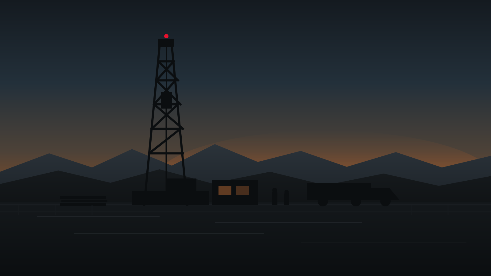
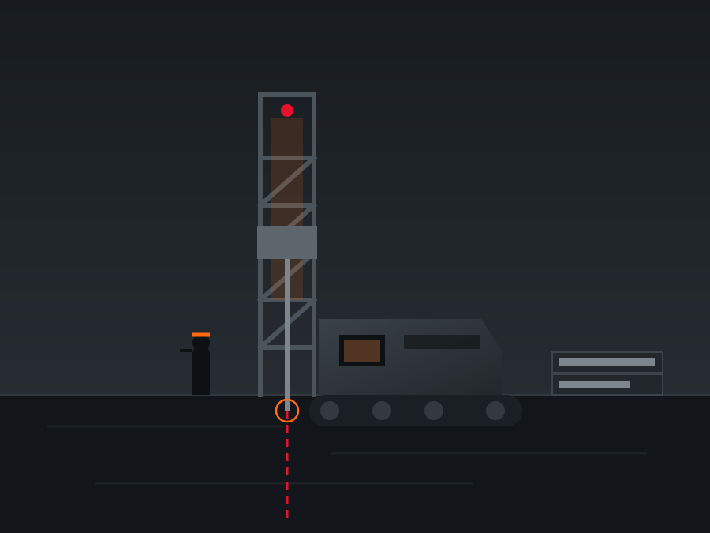
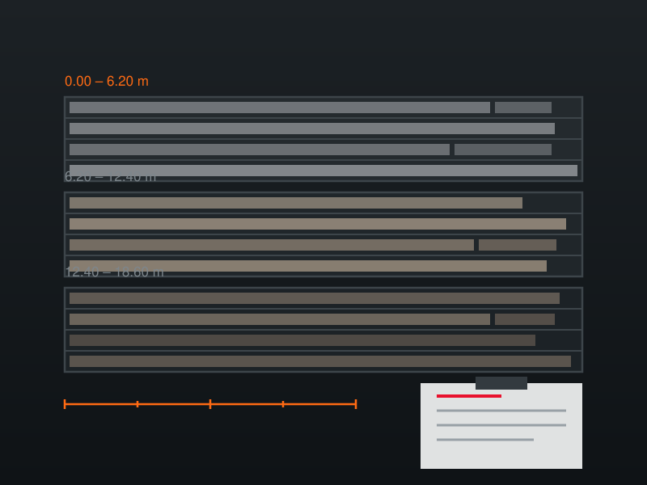
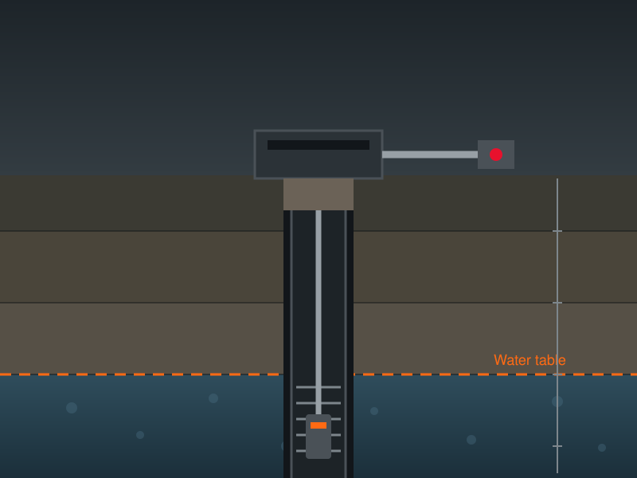
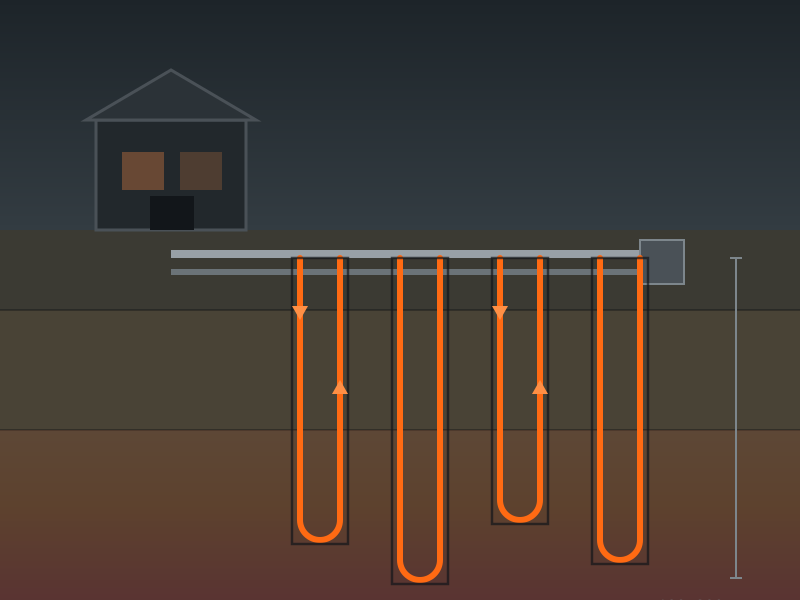
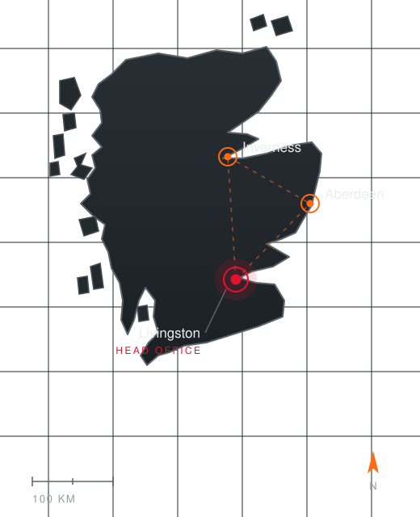

Ground Investigation
Geotechnical and geoenvironmental investigation for design, remediation and due diligence.
- Logging and disturbed & undisturbed sampling
- In-situ testing, including SPT
- Standpipes, gas and groundwater monitoring wells

Specialist drilling contractor · West Lothian
From our yard in Livingston we put rigs and crews on sites the length of the UK — for the consultants, contractors and developers who need the ground answered properly, first time, and on programme.
Certified & accredited
ISO 9001 Quality ISO 14001 Environment ISO 45001 Health & safety Well Drillers Association member01 Services
Whether the question is a foundation design, a mine shaft, a farm's water supply or a heat pump array, the method changes but the standard does not.
Geotechnical and geoenvironmental investigation for design, remediation and due diligence.
Open hole and cored drilling at varying diameters, matched to the ground and the data you need.
The UK's workhorse technique for site investigation in soils, plus the lighter methods for tight plots.
Private water supply for farms, estates, distilleries, greenkeeping and industrial process.
Vertical boreholes for ground source heat pump schemes, domestic through to commercial arrays.
The awkward work — old workings, water, and sites you cannot simply drive a rig onto.
02 Down the hole
A single borehole can pass through five kinds of ground before it finishes. Choosing the wrong method at the wrong depth is how programmes slip. This is the sequence we plan for.

03 Plant & capability
Phoenix runs its fleet in-house rather than subcontracting it out. That is not a boast about kit — it is the reason we can commit to a start date and hold it, put the right rig on the right hole rather than the one that happens to be free, and keep the same crew on your site from set-up to demobilisation.
04 Sectors
Most of our work comes through geotechnical consultants and main contractors, but the rig does not care who is paying — only that the hole is right.
Site investigation for foundation design, earthworks and remediation, from single plots to major schemes.
Turbine base and cable route investigation, plus geothermal boreholes for heat pump schemes.
Private supply for farms, estates, distilleries, golf courses and industrial process water.
Mineral investigation, quarry development, disused workings, shaft location and de-watering.
Geoenvironmental sampling, gas and groundwater monitoring installations, long-term monitoring rounds.
Road, rail, bridge and utility corridors, including restricted-access and over-water positions.
05 How we work
You send the specification, or a sketch and a postcode. We come back with method, duration and price.
Services search, access review, and the consents the site needs before a rig turns a wheel.
RAMS issued and agreed, plant and crew allocated, set-up on an agreed date rather than a hopeful one.
Holes advanced, samples taken and protected, installations placed, daily records kept as we go.
Driller's logs, installation details and photographs issued in the format your engineer works in.
06 Selected work
A cross-section of the work: a brownfield investigation over old workings, a private water supply, and a closed-loop array under a new building.

Ground investigationCable percussion through made ground and till, then triple-tube coring to prove the condition of shallow coal workings beneath the development footprint. Gas and groundwater monitoring wells left in place for the consultant's monitoring rounds.

Water supplySited, drilled and cased into a bedrock aquifer to take the property off a failing spring supply. Screened, developed and test pumped, with headworks and rising main installed ready for the treatment kit.

GeothermalA grid of vertical boreholes drilled, loops installed and grouted, then headed up to a manifold for the incoming heat pump plant — sequenced around the main contractor's groundworks programme.
07 Where we work
Our head office and yard sit in West Lothian, halfway between Edinburgh and Glasgow and inside an hour of most of the Central Belt. Offices in Inverness and Aberdeen cover the north and north-east, and we mobilise UK-wide.

2 Nairn Road, Livingston, West Lothian EH54 8AY
Covering the Highlands, Moray and the west coast.
Covering Aberdeenshire, Angus and the north-east.
Rigs and crews mobilise across the UK for programmes that justify the travel.
08 Common questions
It depends on the rig and the season — cable percussion in the Central Belt is usually a shorter wait than a rotary spread going north. Tell us your target start date in the enquiry and we will tell you honestly whether we can hold it, rather than book it and slip.
A cable percussion rig needs a reasonably level working area and a route in for a 4x4 and trailer. Restricted-access and tracked rigs get through gateways, side paths and into buildings where a standard spread cannot. Send photographs of the access with your enquiry and we will tell you what will fit.
In Scotland, abstracting groundwater is regulated by SEPA under the Controlled Activities Regulations, and the level of authorisation depends on how much you intend to take. England and Wales work differently again. We will tell you which regime applies to your site and what has to be in place before we drill.
Depth, diameter, ground conditions, access and the number of positions all move the figure, so anyone quoting a rate before seeing the scope is guessing. Send the specification or a description of what you need and you will get a proper breakdown, not a range.
Driller's logs, sample schedules, installation and backfill details, in-situ test results and site photographs, issued in the format your engineer works in. Samples are delivered to the laboratory of your choosing.
Yes. Livingston is the head office and yard, with Inverness and Aberdeen covering the north, but rigs and crews mobilise across the UK where the programme justifies it. Distance affects mobilisation cost, not whether we will come.
09 Request a quote
The more you can give us — specification, depths, number of positions, access photographs — the tighter the price comes back. If it is easier to talk it through, phone the office and you will get a driller, not a call centre.
2 Nairn Road, Livingston, West Lothian EH54 8AY
Monday to Friday, 8am – 5pm